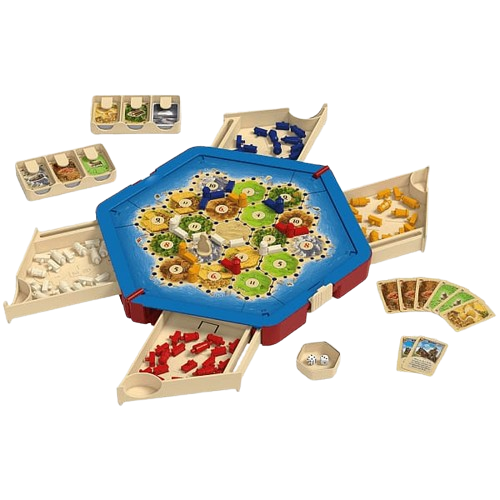
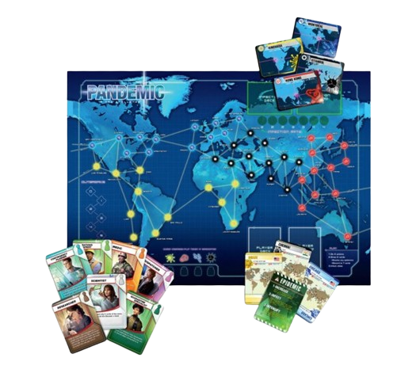
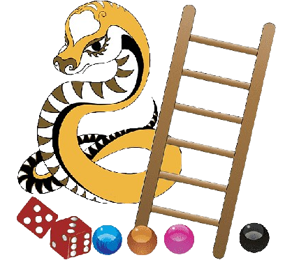
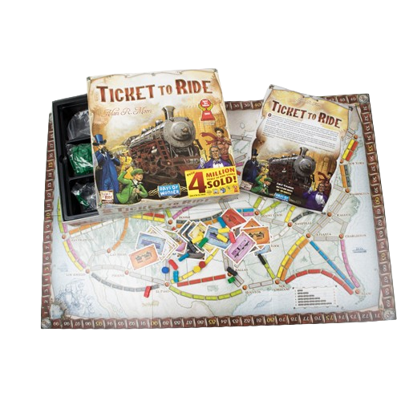

About Board Game's
Board games encompass a wide variety of tabletop experiences,ranging from classic strategy games like Chess to modern titles like Catan. With diverse genres such as family, party, and cooperative games, these tabletop pastimes foster strategic thinking, social interaction, and often, friendly competition. Components like boards, pieces, cards, and dice, along with game mechanics, contribute to the unique appeal of each game. Whether played casually for entertainment or competitively at conventions, board games continue to be a popular and enduring form of recreation, offering something for every age and interest.
 Board games
encompass a rich diversity, ranging from classic strategy games like
Catan and Ticket to Ride to innovative experiences like legacy games
and social deduction titles. From Eurogames emphasizing strategy to
Ameritrash games focusing on theme, and with the rise of
deck-building and legacy concepts, the board gaming landscape offers
something for everyone. Whether engaging in cooperative challenges,
intense strategic battles, or immersive role-playing experiences,
board games continue to evolve, combining traditional mechanics with
new themes and digital elements, shaping a vibrant and inclusive
gaming community.
Board games
encompass a rich diversity, ranging from classic strategy games like
Catan and Ticket to Ride to innovative experiences like legacy games
and social deduction titles. From Eurogames emphasizing strategy to
Ameritrash games focusing on theme, and with the rise of
deck-building and legacy concepts, the board gaming landscape offers
something for everyone. Whether engaging in cooperative challenges,
intense strategic battles, or immersive role-playing experiences,
board games continue to evolve, combining traditional mechanics with
new themes and digital elements, shaping a vibrant and inclusive
gaming community.

Caten is an engaging board game that combines strategy and skill for 2 to 6 players. The objective is to create paths of interconnected tiles, forming chains of matching symbols. Players take turns placing tiles and strategically extending existing chains while disrupting opponents' plans. With simple rules, Caten offers a blend of tactical depth and accessibility, making it suitable for players of various ages and skill levels. The modular board evolves dynamically, creating a unique experience in each game. Quick to learn and play, Caten provides an enjoyable balance of competition and strategy, making it an excellent choice for casual gaming sessions or family gatherings.

Chesss is a classic two-player strategy board game that has been played for centuries. The game is played on an 8x8 grid, known as a chessboard, and each player controls an army of 16 pieces: one king, one queen, two rooks, two knights, two bishops, and eight pawns. The objective of chess is to checkmate your opponent's king, putting it in a position where it cannot escape capture. Players take turns moving their pieces across the board according to specific rules for each type of piece. The game requires foresight, planning, and tactical thinking, with each piece having unique movement capabilities.

Pandemic is a collaborative board game where 2 to 4 players form a disease control team striving to thwart global outbreaks of four deadly diseases. Each player assumes a unique role with specialized abilities, and together they must strategically traverse the world, treating infections, preventing outbreaks, and discovering cures. The game's cooperative nature adds a thrilling element as players work against the clock to find solutions and save humanity from the brink of pandemics, making it a widely acclaimed and engaging board game.

Snake-Ladders the game is played on a board with 100 numbered squares, typically in a 10x10 grid. Players take turns rolling a die and navigating their piece along the board. Snakes and ladders connect different squares throughout the board. Snakes represent bad luck, anger, and murder, while ladders represent good deeds like kindness, faith, and humility. The game teaches that salvation is attainable through good deeds and that evil deeds lead to rebirth in lower forms of life.

Ticket to Ride is a popular board game designed by Alan R. Moon. Set in various editions covering different geographical regions, players collect train cards to claim routes on a map, completing destination tickets for points. Praised for its accessible gameplay and strategic depth, the game is available in multiple editions, allowing players to choose the region that interests them most. It is widely available at board game retailers, providing an engaging and replayable experience for players of all ages.
MORE
Nothing To Say

M
U B A S H I R